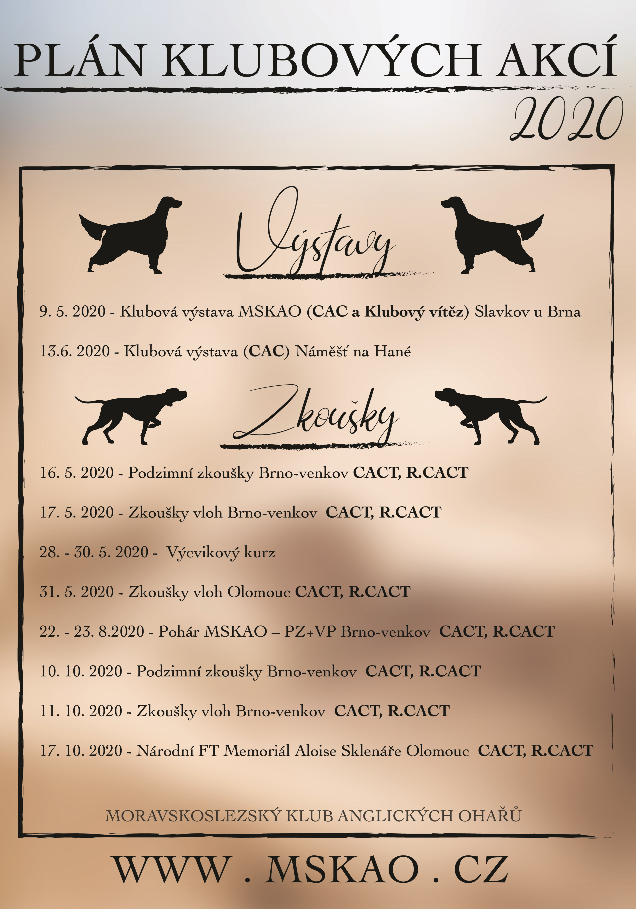
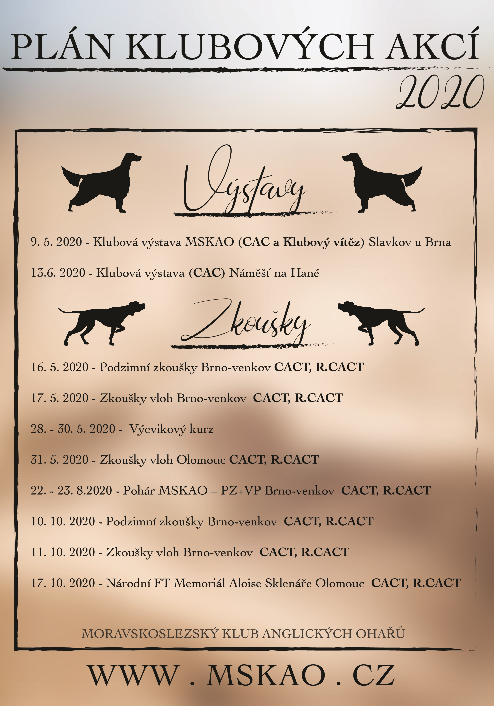

Moravskoslezský klub anglických ohařů
Výzva
Notice
Ročenka MSKAO za rok 2019
Email od MVDr. Romana Vitáska Ph.D. ohledně problematiky úspěšného zabřezávání chovných zvířata
Informace
Výroční členská schůze Českého pointer a setter klubu, z.s. dne 2.2.2020 hlasovala o návrhu
nových chovných podmínek, který byl připraven ve spolupráci obou klubů (tj. MSKAO a ČPSK).
Výsledek hlasování je ZDE  .
Členové MSKAO budou o návrhu hlasovat na Volební výroční členské schůzi dne 8.3.2020.
.
Členové MSKAO budou o návrhu hlasovat na Volební výroční členské schůzi dne 8.3.2020.
Program Volební výroční členské schůze Moravskoslezského klubu anglických ohařů, z.s. dne 8.
března 2020 ZDE  .
.
Zápis z výborové schůze MSKAO
Pes roku - exteriér
Jde soutěž o nejúspěšnějšího jedince z exteriéru. Je určena pro jedince AO v majetku člena MSKAO na základě podané přihlášky.
Ocenění PES ROKU MSKAO - EXTERIÉR obdrží jedinec, který získal největší počet bodů. Ocenění bude předáno na výroční členské schůzi následujícího roku.
Pro více informací si prosím prostudujte přiložené dokumenty...
Tabulku prosím zašlete na emailovou adresu pana Čestmíra Šrámka, hlavního poradce chovu - hpch.mskao(zavinac)gmail.com. Poslední termín přijetí přihlášky je 25.2.2020.
Pes roku - kategorie výkon
Jde soutěž o nejúspěšnějšího jedince z výkonu loveckých psů. Je určena pro jedince AO v majetku člena MSKAO na základě podané přihlášky.
Do soutěže se započítávají výsledky ze všech zkoušek a soutěží pořádaných v České republice, ale i v zahraničí, za uplynulý kalendářní rok (viz. Přihláška a bodovací tabulka).
Ocenění PES ROKU MSKAO - KATEGORIE VÝKON obdrží jedinec, který získal největší počet bodů. Ocenění bude předáno na výroční členské schůzi následujícího roku.
Pro více informací si prosím prostudujte přiložené dokumenty...

Výzva ke kandidování do výboru MSKAO
Vážení členové Moravskoslezského klubu anglických ohařů, z.s.,
jak jste jistě zaznamenali z níže zveřejněné pozvánky na letošní výroční členskou schůzi, bude se jednat o schůzi volební, na které budou nově zvoleny orgány spolku, tj. výbor klubu a kontrolní komise klubu.
Jak vyplývá ze Stanov Moravskoslezského klubu anglických ohařů, z.s., návrhy na volbu členů výboru předkládají členové klubu písemnou formou k rukám předsedy klubu, a to do 28. února, před volební výroční členskou schůzí.
Prosíme Vás tedy, abyste kandidáty do voleb výboru posílali do 28.2.2020 na e-mailovou adresu predseda.mskao@gmail.com , případně poštou na zasílací adresu klubu: MSKAO, Sadová 315, 251 64 Mnichovice. Kandidáti by měli o své kandidatuře být spraveni a souhlasit s ní.
Stejným způsobem prosím postupujte v případě kandidatury do kontrolní komise klubu.
Děkujeme Vám,
výbor Moravskoslezského klubu anglických ohařů, z.s.
Pozvánka na volební výroční členskou schůzi a plán akcí MSKAO v roce 2020
Rádi bychom Vás pozvali na volební výroční členskou schůzi MSKAO, která se koná v neděli 8. března od 10 hodin.
Dále se můžete v roce 2020 těšit na následující plánované akce MSKAO.
 
